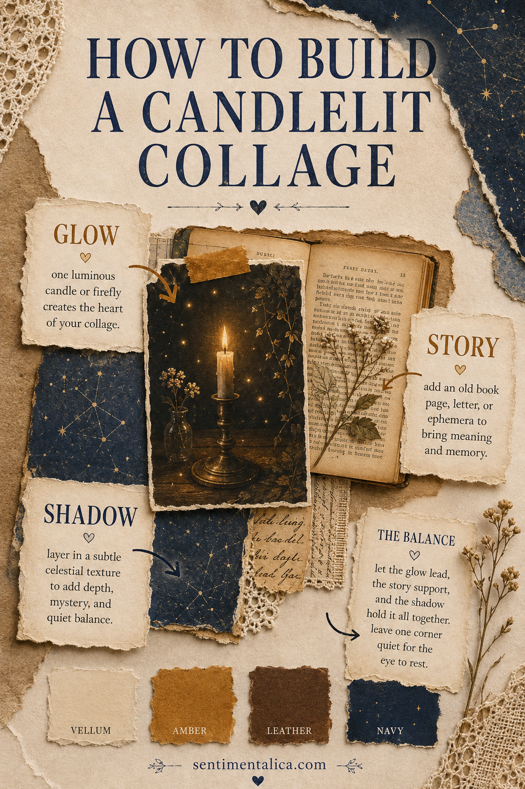
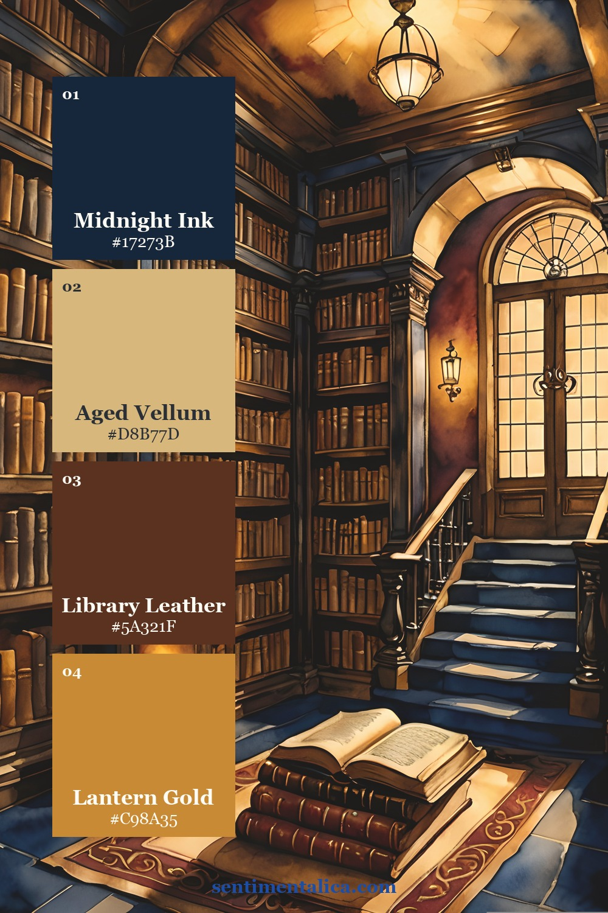
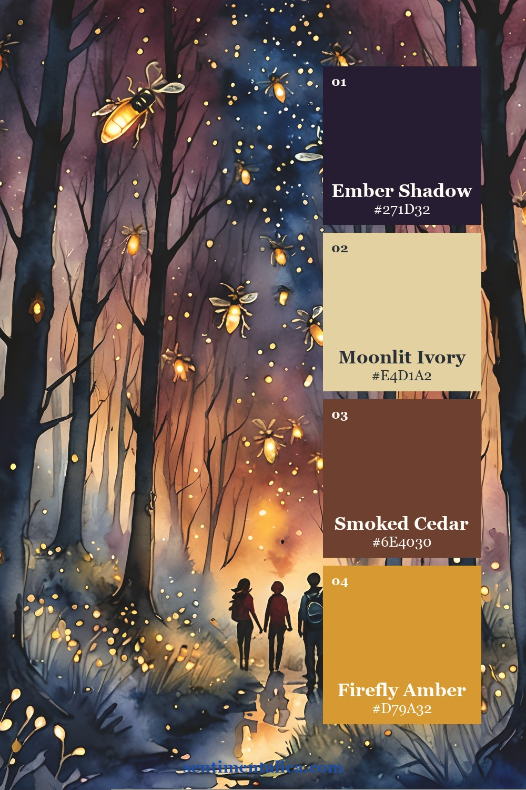
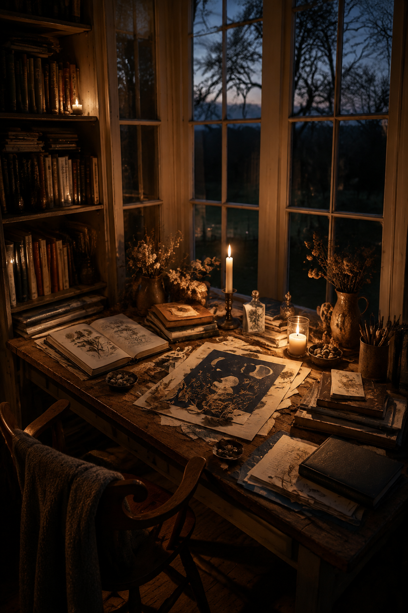

Candlelit collage is most convincing when the light seems to come from somewhere. Scattered gold accents can look decorative, but clustered amber creates atmosphere. With Firefly Glow, build the composition around one source of light, one piece that carries the story and one shadow layer that holds everything together.

Give each picture one job
Choose a candle, firefly or luminous celestial detail as glow. Add an old book, letter or botanical as story. Use navy pattern, dark foliage or a faded night texture as shadow. Keep the brightest and highest-contrast edges close to the glow; soften the elements as they move away from it.
Leave the opposite corner intentionally quiet. That area can hold journaling, a date or simply unmarked paper. Darkness feels deeper when it has space around it.
Choose the temperature of the page

The first palette is the warmest. Let vellum cover most of the page, leather brown establish age and navy provide a small, decisive contrast.

Use the second palette for an old-library feeling. Cluster amber around the focal point and repeat it only once with a brass clip, wax seal or tiny stitched cross.

The third palette leans further into night. It works for October reading journals, evening memory pages and gentle Halloween spreads that do not need obvious motifs.
Assemble one luminous cluster
Lay down the navy shadow texture first. Place the story image over it, slightly offset so both remain visible. Add the glowing focal image last, overlapping the story piece near its strongest line or detail. Tuck a strip of vellum beneath the cluster to separate it from the background.
If the page needs more light, enlarge the pale area rather than adding more gold. If it needs more mystery, deepen one shadow edge rather than covering the whole spread in navy.

The finished composition should read in this order: light, meaning, shadow. That sequence turns pretty printable pictures into a scene with a mood and a reason to linger.